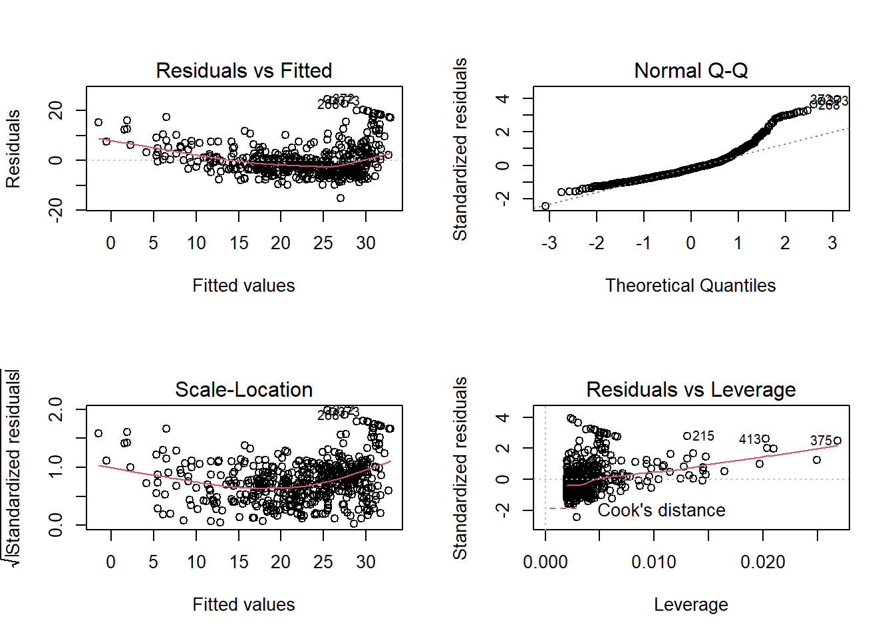

Chapter 18 Simple Linear Regression
Here are the packages we will use in this chapter.
install.packages("data.table") # for data manipulation
install.packages("corrplot") # for ploting beautiful correlation matrixLoad these packages into R:
## corrplot 0.90 loadedLinear regression is to use a linear equation to approximate the relationship between dependent variable and single/multiple explanatory variables (also known as independent variables or predictors). The linear regression model with single predictor is called simple linear regression. The linear regression model with multiple predictors is called multiple linear regression.
Let’s illustrate the concept of linear regression through the following example of simple linear regression.
The Boston house price dataset contains the price information of houses in the Boston suburbs areas. It also includes variables related to the neighbourhood, air pollution, per capita crime rate, index of accessibility to radial highways, etc, for evaluation of their impact on house price.
Here is a brief description of the variables in the dataset:
- medv: median value of ower-occupied homes in $10,000
- crim: per capita crime rate by town
- zn: proportion of residential land zoned for lots over 25,000 sq.ft.
- indus: proportion of non-retail business acres per town
- chas: charles river dummy variables
- nox: nitrogen oxides concentration (parts per 10 million)
- rm: average number of rooms per dwelling
- age: proportion of owner-occupied units built prior to 1940
- dis: weighted mean of distances to five Boston employment centres
- rad: index of accessibility to radial highways
- tax: full-value property tax rate per $10,000
- ptratio pupil-teacher ratio by town
- black: 1000*(Bk-0.63)^2 where Bk is the proportion of African American by town
- lstat: lower income of the population within the neighborhood (percent)
- location: a categorical variable to indicate the location of the area
Note that, the medv is the dependent variable, which we want to explain and predict.
The above scatter plot demonstrates that the relationship between medv and lstat: The house price tends to be higher in richer neighborhood. This is intutively true, but we want to further quantify this relationship. The goal of linear regression is to approximate and estimate this relationship through a linear equation. In particular, for this example, we want to approximate and estimate the relationship between medv and lstat through a linear equalition as below: \[medv=\beta_0+\beta_1*lstat+\epsilon\] In the above linear regression model, medv is called dependent variable, the variable we want to explain and predict. In other words, we observe variation in medv (i.e., different houses have different price), and we want to explain what factors causes such variation in house price.
lstat is called independent variable, which is used to explain and predict the dependent variable. In other words, we hypothesize that the houses have different prices is because they are located in region with different income status.
\(\epsilon\) is called residual terms. This represents the variation in medv that is left unexplained by the independent variable. In this particular example, it encompasses any related factors (such as size of the house, number of bedrooms, interest rate) that are not included in the model as predictors.
The linear regression is a method to develop such linear equations and estimate their coefficents (i.e., \(\beta_0\), \(\beta_1\) in the above example) such that we can quantify the relationship between the dependent and independent variables.
18.1 Examine and explore the data
Before developing any linear regression, it is a best practice to explore the data first to check whether there exists any kinds of linear relationship.
As mentioned, we will use the Boston house price dataset for illustration. ### Load and clean the data
Boston=fread("data/Boston.csv") # read the data in R as data.table
head(Boston) # inspect the first few rows visually## crim zn indus chas nox rm age dis rad tax ptratio black lstat
## 1: 0.00632 18 2.31 0 0.538 6.575 65.2 4.0900 1 296 15.3 396.90 4.98
## 2: 0.02731 0 7.07 0 0.469 6.421 78.9 4.9671 2 242 17.8 396.90 9.14
## 3: 0.02729 0 7.07 0 0.469 7.185 61.1 4.9671 2 242 17.8 392.83 4.03
## 4: 0.03237 0 2.18 0 0.458 6.998 45.8 6.0622 3 222 18.7 394.63 2.94
## 5: 0.06905 0 2.18 0 0.458 7.147 54.2 6.0622 3 222 18.7 396.90 5.33
## 6: 0.02985 0 2.18 0 0.458 6.430 58.7 6.0622 3 222 18.7 394.12 5.21
## location medv
## 1: west 24.0
## 2: east 21.6
## 3: west 34.7
## 4: south 33.4
## 5: south 36.2
## 6: south 28.7The data is tidy: each rows represents an observation, and each column is a variable.
## Classes 'data.table' and 'data.frame': 506 obs. of 15 variables:
## $ crim : num 0.00632 0.02731 0.02729 0.03237 0.06905 ...
## $ zn : num 18 0 0 0 0 0 12.5 12.5 12.5 12.5 ...
## $ indus : num 2.31 7.07 7.07 2.18 2.18 2.18 7.87 7.87 7.87 7.87 ...
## $ chas : int 0 0 0 0 0 0 0 0 0 0 ...
## $ nox : num 0.538 0.469 0.469 0.458 0.458 0.458 0.524 0.524 0.524 0.524 ...
## $ rm : num 6.58 6.42 7.18 7 7.15 ...
## $ age : num 65.2 78.9 61.1 45.8 54.2 58.7 66.6 96.1 100 85.9 ...
## $ dis : num 4.09 4.97 4.97 6.06 6.06 ...
## $ rad : int 1 2 2 3 3 3 5 5 5 5 ...
## $ tax : int 296 242 242 222 222 222 311 311 311 311 ...
## $ ptratio : num 15.3 17.8 17.8 18.7 18.7 18.7 15.2 15.2 15.2 15.2 ...
## $ black : num 397 397 393 395 397 ...
## $ lstat : num 4.98 9.14 4.03 2.94 5.33 ...
## $ location: chr "west" "east" "west" "south" ...
## $ medv : num 24 21.6 34.7 33.4 36.2 28.7 22.9 27.1 16.5 18.9 ...
## - attr(*, ".internal.selfref")=<externalptr>Since location (east, south, west, north) is actually a categorical variable, we need to change it as factor.
##
## east north south west
## 119 132 130 125 # change location from character as factor
Boston[,location:=factor(location)]
# examine the frequencey table of chas variable
table(Boston$chas)##
## 0 1
## 471 35Examine whether there are some missing value in the data:
## [1] 0Take a quick look at the summary of the data to see if there is any extreme values in each variable:
## crim zn indus chas nox
## Min. : 0.00632 Min. : 0.00 Min. : 0.46 0:471 Min. :0.3850
## 1st Qu.: 0.08205 1st Qu.: 0.00 1st Qu.: 5.19 1: 35 1st Qu.:0.4490
## Median : 0.25651 Median : 0.00 Median : 9.69 Median :0.5380
## Mean : 3.61352 Mean : 11.36 Mean :11.14 Mean :0.5547
## 3rd Qu.: 3.67708 3rd Qu.: 12.50 3rd Qu.:18.10 3rd Qu.:0.6240
## Max. :88.97620 Max. :100.00 Max. :27.74 Max. :0.8710
## rm age dis rad
## Min. :3.561 Min. : 2.90 Min. : 1.130 Min. :1.000
## 1st Qu.:5.886 1st Qu.: 45.02 1st Qu.: 2.100 1st Qu.:4.000
## Median :6.208 Median : 77.50 Median : 3.207 Median :5.000
## Mean :6.285 Mean : 68.57 Mean : 3.795 Mean :4.332
## 3rd Qu.:6.623 3rd Qu.: 94.08 3rd Qu.: 5.188 3rd Qu.:5.000
## Max. :8.780 Max. :100.00 Max. :12.127 Max. :5.000
## tax ptratio black lstat location
## Min. :187.0 Min. :12.60 Min. : 0.32 Min. : 1.73 east :119
## 1st Qu.:279.0 1st Qu.:17.40 1st Qu.:375.38 1st Qu.: 6.95 north:132
## Median :330.0 Median :19.05 Median :391.44 Median :11.36 south:130
## Mean :408.2 Mean :18.46 Mean :356.67 Mean :12.65 west :125
## 3rd Qu.:666.0 3rd Qu.:20.20 3rd Qu.:396.23 3rd Qu.:16.95
## Max. :711.0 Max. :22.00 Max. :396.90 Max. :37.97
## medv
## Min. : 5.00
## 1st Qu.:17.02
## Median :21.20
## Mean :22.53
## 3rd Qu.:25.00
## Max. :50.00No extreme value or obvious error are found in the data. We have the luxury to work with a very clear dataset. Next, we will introduce two tools to examine whether any linear relationship exists in the data: correlation matrix and scatter plot.
18.1.1 Correlation matrix
Correlation coefficient is a single number between -1 and 1 to quantify the strength of the linear relationship between two variables. We can obtain the correlation between any two variable as below:
# cor() is only takes numeric variables as arguments
corr=cor(Boston[,-c("location","chas")])
# round the correlation coefficient with 2 digits
round(corr, digits = 2) ## crim zn indus nox rm age dis rad tax ptratio black
## crim 1.00 -0.20 0.41 0.42 -0.22 0.35 -0.38 0.25 0.58 0.29 -0.39
## zn -0.20 1.00 -0.53 -0.52 0.31 -0.57 0.66 -0.29 -0.31 -0.39 0.18
## indus 0.41 -0.53 1.00 0.76 -0.39 0.64 -0.71 0.31 0.72 0.38 -0.36
## nox 0.42 -0.52 0.76 1.00 -0.30 0.73 -0.77 0.41 0.67 0.19 -0.38
## rm -0.22 0.31 -0.39 -0.30 1.00 -0.24 0.21 -0.12 -0.29 -0.36 0.13
## age 0.35 -0.57 0.64 0.73 -0.24 1.00 -0.75 0.30 0.51 0.26 -0.27
## dis -0.38 0.66 -0.71 -0.77 0.21 -0.75 1.00 -0.33 -0.53 -0.23 0.29
## rad 0.25 -0.29 0.31 0.41 -0.12 0.30 -0.33 1.00 0.44 0.09 -0.21
## tax 0.58 -0.31 0.72 0.67 -0.29 0.51 -0.53 0.44 1.00 0.46 -0.44
## ptratio 0.29 -0.39 0.38 0.19 -0.36 0.26 -0.23 0.09 0.46 1.00 -0.18
## black -0.39 0.18 -0.36 -0.38 0.13 -0.27 0.29 -0.21 -0.44 -0.18 1.00
## lstat 0.46 -0.41 0.60 0.59 -0.61 0.60 -0.50 0.24 0.54 0.37 -0.37
## medv -0.39 0.36 -0.48 -0.43 0.70 -0.38 0.25 -0.15 -0.47 -0.51 0.33
## lstat medv
## crim 0.46 -0.39
## zn -0.41 0.36
## indus 0.60 -0.48
## nox 0.59 -0.43
## rm -0.61 0.70
## age 0.60 -0.38
## dis -0.50 0.25
## rad 0.24 -0.15
## tax 0.54 -0.47
## ptratio 0.37 -0.51
## black -0.37 0.33
## lstat 1.00 -0.74
## medv -0.74 1.00corr is called correlation matrix: Each number indicates the correlation coefficient between the two variables on the corresponding row and column.
As detailed as it is, the correlation matrix is however hard to read. We can add some visual element to help readers comprehending the correlation matrix. We can use corrplot() to plot the correlation matrix as below:
# the correlation between x and y is the same as y and x
# thus, we only need the upper or lower part of the matrix
corrplot(corr, type = "upper") Both the size and color of the circle indicates the magnitude of the correlation coefficients so that we can focus our attention on the pairs with correlation close to 1 or -1.
We can set the method=“number” to show the correlation coefficient directly.
# number.cex and tl.cex change the font size of the number and label, respectively
corrplot(corr, type = "upper", method = "number", number.cex = .7, tl.cex=0.8)
We can combine these two togother:
The last column shows that medv has strong positive correlation with rm (number of rooms in the house), wiht \(\rho=0.7\), and has strong negative correlation with lstat (\(\rho=-0.74\)). This gives us the confidence to develop linear regression model to explain the variation in medv.
18.1.2 Scatter plot
Scatter plot gives a visual clue of the correlation between two variables. We have learned how to make scatter plot with ggplot2 package. Here we will introduce a quick way of making scatter plot matrix.
pairs(Boston[,c("indus","nox","rm","tax","ptratio","lstat","medv")],
pch = 19, cex = 0.1, lower.panel=NULL) # cex sets the size of the pointsIt becomes difficult to see when too many variables are putting in the scatter plot matrix all together. Thus, you can choose a few variables that has high correlation with the dependent variables for a better display.
Now, draw your attention on the last column, which shows the relationship between medv and different independent variables. It appears that lstat and rm have a very strong linear relationship with medv.
Both correlation matrix and scatter plot matrix indicates that there exists strong relationship between some of the independent variables and dependent variable. New, we will develop linear regression model to approximate and quantify that relationship.
18.2 Develop simple linear regression model
The general form of simple linear regression equation is \(y=\beta_0+\beta_1*x+\epsilon\). This implies two things. First, we are using the variation in x to explain variation in y. E.g., let y= students’ final grade of SCMA450, and x=lines of codes written by the students. Then the model implies that students’ SCMA450 final grade is different because of the number of lines they wrote during the study.
Second, one additional unit of x will always result in the same amount of change (i.e., quantifies by \(\beta_1\)). In the above example, each additional line of code written by the students will result in the same amount of improvement on their final grade. Such linear assumption works fine in many application and leads easy-to-understand interpretation. We will talk about how to address potential non-linear relationship in next chapter.
Back to the Boston house price example, we are trying to explain why the house price varies at Boston. We hypothesize that “lstat” (i.e., the percent of low income population in the neighborhood) may result in different house price: Houses located in “rich” area (i.e., lstat is low) would likely have higher price. To test this hypothesis, we can build a simple linear regression model as follow: \[medv=\beta_0+\beta_1*lstat+\epsilon\]
18.2.1 Estimation
The model estimation is to find the coefficient \(\beta_0\) and \(\beta_1\) to minimize the sum square error, which is known as the least square algorithm. Let’s illustrate the least square algorithm.
For a given lstat, based on the linear equation, we can compute the fitted value of medv according to: \[medvFit=\beta_0+\beta_1*lstat\] and the error term: \[error=medv-\beta_0-\beta_1*lstat\] We can better demonstrate the formula using the following tabular form:
## medv lstat medvFit error
## 1: 24.0 4.98 beta0+beta1*4.98 24-beta0-beta1*4.98
## 2: 21.6 9.14 beta0+beta1*9.14 21.6-beta0-beta1*9.14
## 3: 34.7 4.03 beta0+beta1*4.03 34.7-beta0-beta1*4.03
## 4: 33.4 2.94 beta0+beta1*2.94 33.4-beta0-beta1*2.94
## 5: 36.2 5.33 beta0+beta1*5.33 36.2-beta0-beta1*5.33
## 6: 28.7 5.21 beta0+beta1*5.21 28.7-beta0-beta1*5.21Given any value \(\beta_0\) and \(\beta_1\), based on the above formula in the table, we will get a series of fitted value and errors. We want to our model to best fit the data, meaning we want medvFit to be as close to medv and thus we want error to as small as possible. Thus, the best \(\beta_0\) and \(\beta_1\) should minimize the errors. The algorithm to find optimal \(\beta_0\) and \(\beta_1\) is called least square algoirthm. Mathematically, the least square algorithm will determine \(\beta_0\) and \(\beta_1\) to minimize the residual sum square (RSS): \[\min_{\beta_0,\beta_1} RSS=\sum_i(y_i-\beta_0-\beta_1x_i)^2\] here \(i\) is the index of different observations (i.e., the index of rows in the above table).
We do not to need to calcuate the optimal \(\beta_0\) and \(\beta_1\) mannually. The R code to estimate the above model is really simple.
##
## Call:
## lm(formula = medv ~ lstat, data = Boston)
##
## Coefficients:
## (Intercept) lstat
## 34.55 -0.95Here lm() is the function to estimate linear model. It takes two arguments: formula and data. medv~lstat represents the formula: medv is y-variable, with lstat as the x-variable. data=Boston specifies the dataset used.
We typically save the estimated results first and use summary() to get more information about the estimation.
##
## Call:
## lm(formula = medv ~ lstat, data = Boston)
##
## Residuals:
## Min 1Q Median 3Q Max
## -15.168 -3.990 -1.318 2.034 24.500
##
## Coefficients:
## Estimate Std. Error t value Pr(>|t|)
## (Intercept) 34.55384 0.56263 61.41 <2e-16 ***
## lstat -0.95005 0.03873 -24.53 <2e-16 ***
## ---
## Signif. codes: 0 '***' 0.001 '**' 0.01 '*' 0.05 '.' 0.1 ' ' 1
##
## Residual standard error: 6.216 on 504 degrees of freedom
## Multiple R-squared: 0.5441, Adjusted R-squared: 0.5432
## F-statistic: 601.6 on 1 and 504 DF, p-value: < 2.2e-16In fact, lm() function returns a list, and is saved into “fit1” as we defined. We can take a look at the elements in “fit1” list.
## [1] "coefficients" "residuals" "effects" "rank"
## [5] "fitted.values" "assign" "qr" "df.residual"
## [9] "xlevels" "call" "terms" "model"As seen, the fitted line is: \[medvFit=34.55-0.95*lstat\]
18.2.2 How to interpret the coefficient estimates?
The estimated coefficients (\(\beta_0\) and \(\beta_1\)) are actually random variables, because their value depends on the data and the data are typically from random sampling. In this example, if we happen to sample a different set of houses at Bonston, we may get different coefficient estimates.
Let’s illustrate that by randomly drawing 100 houses from the Boston dataset and re-estimate the model based on the sub-sample.
# Take 100 houses randomly from the Boston dataset
Boston_sample=Boston[sample(1:506, 100, replace=FALSE)]
# estimate coefficients based on the sub-sample
fit_sub=lm(formula=medv~lstat, data=Boston_sample)
# plot the sub-sample and fitted line
plot(Boston_sample$lstat, Boston_sample$medv)
points(Boston_sample$lstat, fitted(fit_sub), col="blue", type="l")Each time we run the above code, we randomly generate a new dataset and obtain a new estimated regression line. In this example, although the sample is randomly drawn and thus different, the shope of the line is quite rubust. This is because there is a strong linear relationship between medv and lstat, and thus this relationship should sustain in the random sample. In this case, we says the coefficient lstat is significant.
Since the coefficient estimates are random variable, we can obtain their confidence interval as below:
## 2.5 % 97.5 %
## (Intercept) 33.448457 35.6592247
## lstat -1.026148 -0.8739505This means, with probability of 95%, \(\beta_1\) will be between -1.026148 and -0.8739505. Notice that, this interval does not contain 0, meaning that we are pretty sure the coefficient is not zero and has a consistent negative sign (i.e., the lstat has a significant impact on medv).
In particular, the p-value is particularly used to determine whether the coefficient is significantly different from 0. p-value < 5% is commonly considered that the coefficient is significantly different from 0.
We will only intercept the impact of significant independent variable on dependent variable, because, as mentioned, we cannot differentiate the impact of insignifcant variable from 0.
In this example, the estimated result suggests that: when lstat=0, then medv is 34.55; as lstat increases by 1, then medv will decreases on average by 0.95 (or 0.874~1.026).
18.3 Overall model fittness
How good is our model? In other words, how does the linear line fit our data?
Let’s first examine the model fittness through a scatter plot.
# plot the original data
plot(Boston$lstat, Boston$medv)
# fitted() function returns the fitted value
points(Boston$lstat, fitted(fit1), col="blue") 
As seen above, the blue line is the fitted line: for a given lstat, the blue line denotes our prediction of the corresponding medv. As seen, there is gap between the actual medv and our prediction. That is the error terms. The linear linear capture the linear relationship, but the error term is quite evident.
In addition to the above visual inspection, we can use two metrics to determine how “good” the model is.
- R-squared, as well as the adjusted R-squared
- F-statistic and the correponding p-value
R-squared (R2) measures the percent of variation in dependent variable that is explained by the model. The formula for R-squared is: \[R2=1-\frac{RSS}{\sum(y_i-\bar{y})^2}=1-\frac{\sum_i(y_i-\beta_0-\beta_1x_i)^2}{\sum_{i}(y_i-\bar{y})^2}\] Here \(\sum_{i}(y_i-\bar{y})^2\) represents the total variation in y that we want to explain. \(\sum_i(y_i-\beta_0-\beta_1x_i)^2\) represents the variation left unexplained by our linear regression model. \(\frac{\sum_i(y_i-\beta_0-\beta_1x_i)^2}{\sum_{i}(y_i-\bar{y})^2}\) represent the precents of variation in y that is left unexplained (i.e., the variation in the error terms).
Since our goal is to explain the variation in dependent variable, a higher R-square means more variation is explained by the model. However, R-squared always increases as more independent variables are included in the model. Thus, we usually use adjusted R-squared instead, which will penalize the model complexity. Adding irrelevant independent variables increases R-squared, but will lower adjusted R-squared. We will come back to this when discussing model selection.
F-statistic is a statistical test whether all the coefficients (except intercept) are jointly 0. If that is true, then the model is useless. The model with p-value of F-statistics less than 0.05 is considered a good model, i.e., at least some coefficients are not 0. Let’s look at the model fittness for the Bonston house price example.
##
## Call:
## lm(formula = medv ~ lstat, data = Boston)
##
## Residuals:
## Min 1Q Median 3Q Max
## -15.168 -3.990 -1.318 2.034 24.500
##
## Coefficients:
## Estimate Std. Error t value Pr(>|t|)
## (Intercept) 34.55384 0.56263 61.41 <2e-16 ***
## lstat -0.95005 0.03873 -24.53 <2e-16 ***
## ---
## Signif. codes: 0 '***' 0.001 '**' 0.01 '*' 0.05 '.' 0.1 ' ' 1
##
## Residual standard error: 6.216 on 504 degrees of freedom
## Multiple R-squared: 0.5441, Adjusted R-squared: 0.5432
## F-statistic: 601.6 on 1 and 504 DF, p-value: < 2.2e-16For this example, the R-squared is 0.5441, meaning 54.41% of the variation in medv is explained by the model; Adjusted R-squared is not much different, meaning the variables included are mostly relevant. The p-value of the F-statistic is less than 2.2e-16, meaning the model is very significant.
18.3.1 Regression Diagnoise
In order for the estimated linear line to be the best fitted line, we need to make an assumption on the error terms \(\epsilon\): \(\epsilon \sim N(0, \sigma^2 )\), which means
- \(\epsilon\) on average should be 0, regardless the value of x and y.
- \(\epsilon\) has constant stdev deviation, regardless the value of x and y (No “Heteroskedasticity”).
- \(\epsilon\) are not correlated (No “Autocorrelation”).
In most applications, we are fine to assume these to be true. Even if these assumptions are not true, the point estimates of the coefficients is still unbiased; we just cannot trust their confidence interval. Nevertheless, there is a quick way to check whether these assumptions are true by plotting the residuals.

Draw your attention on the first subplot (the up-left one). It seems to suggest that the average of residuals does not always equal to 0: it seems to be above 0 when fitted value is very small or very large. This can also be seen from the plot of the fitted value.
The above plot suggests that our linear model underestimates medv when lstat is either very small or very large.
The above diagnose seems to suggests that the linear regression model may not provide a perfect approximation to the relationship between medv and lstat. We will discuss later how to address the non-linear relationship.
18.4 Use estimated model for prediction
E.g., we want to predict what medv could be if lstat is 10:20. We can obtain both point estimates, as well as the 95% prediction interval.
## fit lwr upr
## 1 25.05335 24.47413 25.63256
## 2 24.10330 23.54602 24.66057
## 3 23.15325 22.60809 23.69841
## 4 22.20320 21.65967 22.74673
## 5 21.25315 20.70067 21.80563
## 6 20.30310 19.73159 20.87461
## 7 19.35305 18.75338 19.95272
## 8 18.40300 17.76727 19.03873
## 9 17.45295 16.77450 18.13140
## 10 16.50290 15.77626 17.22955
## 11 15.55285 14.77355 16.33216E.g., looking at the first row (i.e., lstat=10), the prediction of medv is 25.05 or with 95% probability, medv should be between 22.47~25.63.
18.5 Summary
- Correlation matrix and scatter plot matrix are two quick ways to inspect whether linear relationship exists in your data.
- We can estiamte and quantify the linear relationship between dependent variable and independent variable using linear equation: \(y=\beta_0+\beta_1x+\epsilon\), where \(\beta_1\) measures the change of y related to each additional unit of x. This impact is linear becuase it does not depends on the value of x or y.
- The syntax for estimating linear regression in R is: lm(formula=y~x, data).
- Estimated coefficients are randomly variables. We learn how to deterine whether they are significant different from 0.
- Learn to access the model fitness through R-squared, adj-R2, and F-statistics.
- Learn how to use the estimated model for prediction.